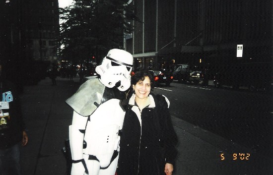

If May 19th was our metaphorical attack on the second Death Star and victory over the Empire, then right now we're in the thick of a pretty wicked Ewok dance party.
Thanks to the efforts of our amazing line members, as well as sponsors, friends, staff, and the great people at the Starlight Starbright Children's Foundation, 12 Fun Centers are currently being placed in hospitals around New York from funds raised during NYLine III. If you've somehow managed to repress the memory of us endlessly repeating the spiel, Starlight Fun Centers are mobile entertainment units that contain a flat panel TV, DVD player, and Nintendo GameCube in a specialized enclosure that can roll right above the bed of a hospitalized child. During long dialysis or chemotherapy treatments, and for children in emergency rooms or isolation, their importance cannot be minimized.
Our friends at Starlight also gave us the opportunity to help in the decision of where the Fun Centers would be donated. Our goal in doing so was to give to hospitals which had personal significance, as well as had been on the waiting list for the longest time. For some institutions, getting a Fun Center can be akin to finding a cloth-caped Jawa, as they are being requested at a faster rate than Starlight can supply them. We are honored to have been able to help the following hospitals:
SUNY Downstate Medical Center and Kings County Hospital Center, Brooklyn, NY. Located in the heart of one of the nation's largest, most ethnically diverse, working-class urban communities, these institutions serve the needs of the 2.6 million residents of Brooklyn and Staten Island. As well as providing my own health care growing up, I'm proud to say that my father has been a practicing pediatrician here for 26 years, as well as director of ambulatory pediatrics at Kings County and faculty member at SUNY Downstate.
Metropolitan Hospital, East Harlem, NY. Like Kings County, Metropolitan is a city hospital which aims to extend comprehensive health services of the highest quality equally to all New Yorkers, regardless of their ability to pay. They work to promote and protect the health, welfare and safety of the people of New York. As a medical student, I have rotated through this hospital several times, including on the pediatric ward. The staff and physicians work incredibly hard to care for their patients, and I have learned a remarkable amount from all of them.
Montefiore Medical Center, Bronx, NY. At the core of Montefiore's mission is the belief that health is a state of physical, social, economic, psychological, and political well-being and that health care is a right that is a matter of social justice. Their recently opened Children's Hospital believes in family centered care that focuses on the whole child and integrates architecture, technology, education and inspiration to engage children in learning that can last a lifetime.
New York Hospital Queens, Queens, NY. Serving the families of Queens, children receive the most technologically advanced treatment, without sacrificing the human touch needed by younger patients. With the recent epidemic of asthma that has affected New York and other urban areas, their Pediatric Asthma Center has become integral for providing the freedom desired by patients to experience a full and active life.
New York Methodist Hospital, Brooklyn, NY. Located in Park Slope, Methodist is an acute care facility that provides a wide variety of specialized inpatient and outpatient services. Aside from being the birthplace of myself and JediRob, and another hospital that my father worked in as a pediatrician, this center has another NYLine tie. New member Freddie Crespo spent many days here being treated for asthma and benefited from the Fun Center program while he himself was hospitalized. The circle is now complete in yet another fashion.
St. Vincent's Catholic Medical Center, New York, NY. As one of the New York metropolitan area's most comprehensive health care systems, SVCMC serves over 600,000 people annually and its Manhattan center is home to one of only 114 accredited Cystic Fibrosis centers in the US. This is another hospital I have had the pleasure to rotate through and the standard of care is unparalleled.
In addition to being able to donate to these hospitals, I would like to extend a personal thanks to everybody involved in the line for allowing me another opportunity. With the blessing of Starlight, we were able to dedicate Fun Centers with an inscription in honor of my late mother, Dr. Yagya Sheila Saxena, who passed away in 2003. During her life she was a doctor, a teacher, and a parent, and she gave herself fully to all of those important roles. It brings such warm feelings to my heart to be able to give something in her honor that may bring as much joy to others as she gave to everyone who she knew. So again I must thank all of my beloved fellow staff members who worked so incredibly hard on this project, all of the remarkable friends I've met on the line, all of people who have donated their time and money, and all of the fine people at Starlight who do such tremendous work. You guys are SO WIZARD. Thank you.
